Representación gráfica de datos¶
La representación de datos científicos mediante gráficos resulta ser fundamental para expresar una gran variedad de resultados. Cualquier informe, artículo o resultado a menudo se expresa de manera mucho más clara mediante gráficos. Python posee varios paquetes gráficos; nosotros usaremos matplotlib, una potente librería gráfica de alta calidad para gráficos bidimensionales y sencilla de manejar. Matplotlib posee el módulo pylab, que es la interfaz para hacer gráficos bidimensionales. Veamos un ejemplo sencillo:
>>> from pylab import * # importar todas las funciones de pylab
>>> x = arange(10.) # array de floats, de 0.0 a 9.0
>>> plot(x) # generar el gráfico
>>> [<matplotlib.lines.Line2D object at 0x9d0f58c>]
>>> show() # mostrar el gráfico en pantalla

Hemos creado un gráfico que representa diez puntos en un array y luego lo hemos mostrado con show(); esto es así porque normalmente hacemos varios cambios en la gráfica antes de mostrarla, sin embargo, cuando trabajamos interactivamente, por ejemplo con la consola ipython podemos activar el modo interactivo para que cada cambio que se haga en la gráfica se muestre en el momento, mediante la función ion(), de esta menera no hace falta poner show() para mostrar la gráfica cada vez que se haga plot():
In [2]: ion() # Activo el modo interactivo
In [3]: plot(x) # Hago un plot que se muestra sin hacer show()
Out[3]: [<matplotlib.lines.Line2D object at 0x9ffde8c>]
Recordar que este modo interactivo sólo está disponible en la consola avanzada ipython, no en la consola estándar de Python. Otra posibilidad es iniciar ipython en modo pylab, haciendo ipython -pylab, de esta manera se carga automáticamente pylab y se activa el modo interactivo, aparte de importar el módulo numpy y todas sus funciones.
Fíjate cómo el comando plot() devuelve una lista de instancias de cada dibujo. En este caso es una lista con un sólo elemento, una instancia Line2D. Podemos capturar esta instancia para referirnos a este dibujo más adelante haciendo:
>>> mi_dibujo, = plot(x)
Ahora la variable mi_dibujo es una instancia o “referencia” a la línea del dibujo, que podremos manipular posteriormente con métodos que se aplican a esa instancia. Nótese que después de mi_dibujo hay una coma; esto es para indicar que mi_dibujo debe tomar el valor del primer (y en este caso el único) elemento de la lista y no la lista en sí, que es lo que habría ocurrido de haber hecho mi_dibujo = plot(x) (erróneamente).
La sintaxis básica de plot() es simplemente plot(x,y), pero si no se incluye x, éste se reemplaza por el número de elemento, por lo que es equivalente a hacer plot(range(len(y)),y). En la gráfica del ejemplo anterior no se ven diez puntos, sino una línea contínua uniendo esos puntos, que es como se dibuja por defecto. Si queremos pintar los puntos debemos hacerlo con un parámetro adicional, por ejemplo:
>>> plot(x,'o') # Pinta diez puntos como "O"
>>> [<matplotlib.lines.Line2D object at 0xa57ffac>]
>>> plot(x,'o-') # Igual que antes, pero uniéndolos además con una línea contínua
>>> [<matplotlib.lines.Line2D object at 0xa58e80c>]

En este caso el ‘o’ se usa para dibujar puntos gruesos y si se añade - también dibuja la línea contínua. En realidad se dibujaron dos gráficos uno encima del otro; si queremos que se cree un nuevo gráfico cada vez que hacemos plot(), debemos añadir el parámetro hold=False a plot():
>>> mi_dibujo, = plot(x*2,'o', hold="False")
El tercer parámetro (o segundo, si no se incluye la x) , donde se indica el símbolo y el color del marcador, admite distintas letras que representan de manera única el color, el símbolo o la línea que une los puntos; por ejemplo, si hacemos plot(x,'bx-') pintará los puntos con marcas “X”, de color azul (‘b’) y los unirá además con líneas contínuas. Estas son otras opciones posibles:
Marcas y líneas
| Símbolo | Descripción |
|---|---|
| ‘-‘ | Línea sólida |
| ‘–’ | Línea a trazos |
| ‘-.’ | Puntos y rayas |
| ‘:’ | Línea punteada |
| ‘.’ | Marcador punto |
| ‘,’ | Marcador pixel |
| ‘o’ | Marcador círculo relleno |
| ‘v’ | Marcador triángulo hacia abajo |
| ‘^’ | Marcador triángulo hacia arriba |
| ‘<’ | Marcador triángulo hacia la izquierda |
| ‘>’ | Marcador triángulo hacia la derecha |
| ‘s’ | Marcador cuadrado |
| ‘p’ | Marcador pentágono |
| ‘*’ | Marcador estrella |
| ‘+’ | Marcador cruz |
| ‘x’ | Marcador X |
| ‘D’ | Marcador diamante |
| ‘d’ | Marcador diamante delgado |
Colores
| Símbolo | Color |
|---|---|
| ‘b’ | Azul |
| ‘g’ | Verde |
| ‘r’ | Rojo |
| ‘c’ | Cian |
| ‘m’ | Magenta |
| ‘y’ | Amarillo |
| ‘k’ | Negro |
| ‘w’ | Blanco |
Para borrar toda la figura se puede usar la función clf(), mientras que cla() sólo borra lo que hay dibujado dentro de los ejes y no los ejes en si.
Se pueden representar varias parejas de datos con sus respectivos símbolos en una misma figura, aunque para ello siempre es obligatorio incluir el valor del eje x:
>>> clf() # Limpio la figura
>>> x2 = x**2
>>> x3 = x**3
>>> plot(x, x,'b.', x, x2, 'rd', x, x3, 'g^')
>>>
[<matplotlib.lines.Line2D object at 0xa94cf6c>,
<matplotlib.lines.Line2D object at 0xa95b72c>,
<matplotlib.lines.Line2D object at 0xa95ba4c>]

Es posible cambiar el intervalo mostrado en los ejes con xlim() e ylim():
>>> xlim(-1,11) # nuevos límites del eje x
>>> (-1, 11)
>>> ylim(-50,850) # nuevos límites del eje y
>>> (-50, 850)
además del marcador y el color indicado de la manera anterior, se pueden cambiar muchas otras propiedades de la gráfica como parámetros de plot() independientes:
| Parámetro | Valores |
|---|---|
| alpha | float (0.0=transparente a 1.0=opaco) |
| color o c | Un color de matplotlib |
| label | string (cadena de texto) |
| markeredgecolor o mec | Un color de matplotlib |
| markeredgewidth o mew | float en puntos |
| markerfacecolor o mfc | Un color de matplotlib |
| markersize o ms float | float en puntos |
| linestyle o ls | ‘-‘ ‘–’ ‘-.’ ‘:’ ‘None’ |
| linewidth o lw | float en puntos |
| marker | ‘+’ ‘*’ ‘,’ ‘.’ ‘1’ ‘2’ ‘3’ ‘4’ ‘<’ ‘>’ ‘D’ ‘H’ ‘^’ ‘_’ ‘d’ ‘h’ ‘o’ ‘p’ ‘s’ ‘v’ ‘x’ ‘|’ TICKUP TICKDOWN TICKLEFT TICKRIGHT |
Un ejemplo usando más opciones sería este:
>>> plot(x, lw='5', c='y', marker='o', ms=10, mfc='red')

También es posible cambiar las propiedades de la gráfica una vez creada, para ello debemos capturar las instancias de cada dibujo en una variable y cambiar sus parámetros. En este caso a menudo hay que usar show() para actualizar el gráfico.:
>>> p1, p2, p3 = plot(x, x,'b.', # Hago tres dibujos, campturando sus
x, x2, 'rd', x, x3, 'g^') # instacias en las variables p1, p2 y p3
>>> p1.set_marker('o') # Cambio el símbolo de la gráfica 1
>>> p3.set_color('y') # Cambio el color de la gráfica 3
>>> show() # Muestro en dibujo por pantalla
Trabajando con texto¶
Exiten funciones para añadir texto a los ejes y a la gráfica en sí, éstos son los más importantes:
>>> p1, p2, p3 = plot(x, x, x, x2, x, x3)
>>> xlabel('Eje X') # Etiqueta del eje X
>>> <matplotlib.text.Text object at 0xad2d4ac>
>>> ylabel('Eje Y') # Etiqueta del eje Y
>>> <matplotlib.text.Text object at 0xad328cc>
>>> title('Mi grafica') # Título del gráfico
>>> <matplotlib.text.Text object at 0xad394ac>
>>> text(7, 200, 'Nota') # Texto en coodenadas (7,200)
>>> <matplotlib.text.Text object at 0xa987e2c>
En este ejemplo, se usó la función text() para añadir un texto arbitrario en la gráfica, cuya posición se debe dar en las unidades de la gráfica. Cuando se utilizan textos también es posible usar fórmulas con formato LaTeX. Veamos un ejemplo:
>>> x = arange(0, 6*pi,0.1)
>>> y1 = sin(x)/x
>>> y2 = sin(x)*exp(-x)
>>> p1, p2 = plot(x, y1, x, y2)
>>> texto1 = text(2, 0.6, r'$\frac{\sin(x)}{x}$', fontsize=20)
>>> texto2 = text(13, 0.2, r'$\sin(x) e^{x}$', fontsize=16)
>>> grid() # Añado una malla al gráfico
Aquí hemos usado código LaTeX para escribir fórmulas matemáticas, para lo que siempre hay que escribir entre r'$ formula $' y he usado un tamaño de letra mayor con el parámetro fontsize. En la última línea hemos añadido una malla con la función grid().
Nota
LaTeX es un sistema de escritura orientado a contenidos matemáticos muy popular en ciencia e ingeniería. Puedes ver una introdución a LaTeX en los cursos ISLA de la ULL: http://cisla.osl.ull.es/octubre06/htc/apuntes/latex
Representación gráfica de funciones¶
Visto el ejemplo anterior, vemos que es muy fácil representar gráficamente una función matemática. Para ello, debemos definir la función y luego generar un array con el intervalo de valores que se quieren representar. Definamos algunas funciones trigonométricas y luego representémolas gráficamente:
>>> def f1(x):
.....: y = sin(x)
.....: return y
.....:
>>> def f2(x):
.....: y = sin(x)+sin(5.0*x)
.....: return y
.....:
>>> def f3(x):
.....: y = sin(x)*exp(-x/10.)
.....: return y
.....:
>>> # array de valores que quiero representar
>>> x = arange(0, 10*pi, 0.1)
>>> p1, p2, p3 = plot(x, f1(x), x, f2(x), x, f3(x))
>>> # Añado una leyenda al gráfico
>>> legend( ('Funcion 1', 'Funcion 2', 'Funcion 3') )
>>> <matplotlib.legend.Legend object at 0xbb4b0ac>

En la última línea hemos añadido una leyenda con la función legend() que admite como entrada una tupla con strings correspondiendo consecutivamente a cada uno de los gráficos.
Histogramas¶
Los histogramas son gráficos que representan el número que veces que se repite ciertos valores dentro de un intervalo, frente a su valor. Podemos hacer histogramas muy fácilmente con la función hist() indicando como parámetros un array con los números a representar. Si no se indica nada mas, se generará un histograma con 10 divisiones (llamadas bins, en inglés). Veamos un ejemplo:
>>> # Importo el módulo de numeros aleatorios de scipy
>>> from scipy import random
>>> # utilizo la función randn() del modulo random para generar
>>> # un array de números aleatorios con distribución normal
>>> nums = random.randn(200) # array con 200 números aleatorios
>>> # Genero el histograma
>>> hist(nums)
>>>
(array([ 2, 10, 11, 28, 40, 49, 37, 12, 6, 5]),
array([-2.98768497, -2.41750815, -1.84733134, -1.27715452, -0.70697771,
-0.13680089, 0.43337593, 1.00355274, 1.57372956, 2.14390637,
2.71408319]),
<a list of 10 Patch objects>)
Vemos que los números del array se dividieron automáticamente en 10 grupos (o bins) y cada barra representa cada una de esas divisiones, con el número de valores que caen en cada intervalo. Si en lugar usar sólo 10 divisiones queremos usae digamos 20, debemos indicarlo como un segundo parámetro:
>>> hist(nums, bins=20)
El la figura de abajo se muestra el resultado de superponer ambos histogramas. La función hist() devuelve una tupla con tres elementos, que son un array con el número elementos en cada división, un array con el punto en eje X donde empieza cada división y una lista con referencias a cada una de las barras para modificar sus propiedades (consulta el manual de matplotlib para más información).

Figuras múltiples¶
Se pueden hacer cuantas figuras independientes (en ventanas distintas) queramos con la función figure(n) donde n es el número de la figura. Cuando se crea una figura al hacer plot() se hace automáticamente figure(1), como aparece en el título de la ventana. Podríamos crear una nueva figura independiente excribiendo figure(2), en ese momento todos los comandos de aplican a figura activa, la figura 2. Podemos regresar a la primera excribiendo figure(1)() para trabajar nuevamente en ella.:
>>> p1, = plot(sin(x)) # Crea una figura en una ventana (Figure 1)
>>> figure(2) # Crea una nueva figura (vacía) en otra ventana (Figure 2)
>>> p2, = plot(cos(x)) # Dibuja el gráfico en la figura 2
>>> title('Funcion coseno') # Añade un título a la figura 2
>>> figure(1) # Activo la figura 1
>>> title('Funcion seno') # Añade un título a la figura 2
Varios gráficos en una figura¶
En ocasiones nos interesa mostrar varios gráficos en un misma figura o ventana. Para ello podemos usar la función subplot(), indicando entre paréntesis un número con tres dígitos cuyo primer dígito indica en número de filas en los que se dividirá la figura, el segundo el número de columnas y el tercero se refiere al gráfico con el que estamos trabajando en ese momento. Por ejemplo, si quisiéramos representar las tres funciones anteriores usando tres gráficas en la misma figura, una al lado de la otra y por lo tanto con una fila y tres columnas, haríamos lo siguiente:
>>> subplot(131) # Figura con una fila y tres columnas, activo primer subgráfico
>>> p1, = plot(x,f1(x),'r-')
>>> subplot(132) # Figura con una fila y tres columnas, activo segundo subgráfico
>>> p2, = plot(x,f2(x),'b-')
>>> subplot(133) # Figura con una fila y tres columnas, activo tercer subgráfico
>>> p3, = plot(x,f3(x),'g-')

Al igual que con varias figuras, para dibujar en un gráfico hay que activarlo, así, si acabamos de dibujar el segundo gráfico escribiendo antes subplot(132) y queremos cambiar algo del primero, debemos activarlo con subplot(131)() y en ese momento todas funciones de gráficas se aplicarán a él.
Representando datos de laboratorio¶
Representar datos leídos de un fichero en lugar de generarlos directamente, es tan fácil como leer los datos y pasar los a arrays de numpy. Una vez hecho, se grafican como hemos visto:
>>> # Leo un fichero de dos columnas de datos, pasándolo a un array
>>> datos = loadtxt('datos_2col.txt')
>>> datos.shape # 100 filas, 2 columnas
>>> (100, 2)
>>> col2, = plot(datos[:,1], 'b.') # Primera columna, con puntos azules (b)
>>> col1, = plot(datos[:,0], 'r.') # Segunda columna, con puntos rojos (r)
>>> # Trazo una línea horizontal en la coordenada y=4 de color verde (g)
>>> axhline(4, color='g')
>>> <matplotlib.lines.Line2D object at 0x169c6d8c>
>>> # Trazo una línea vertical en la coordenada x=30 de color verde (g)
>>> axvline(20, color='g')
>>> <matplotlib.lines.Line2D object at 0xac5986c>
>>> # Dibujo una banda horizontal de y=0 a y=2 de color azul y 30% de transparencia (alpha=0.3)
>>> axhspan(0, 2, alpha=0.3, color='b')
>>> <matplotlib.patches.Polygon object at 0xac59c4c>
>>> # Dibujo una banda vertical de x=60 a x=80 de color verde y 30% de transparencia
>>> axvspan(60, 80, alpha=0.3, color='g')
>>> <matplotlib.patches.Polygon object at 0xac59a0c>
>>> # Etiqueto los ejes
>>> xlabel('Eje X')
>>> <matplotlib.text.Text object at 0xad043ac>
>>> ylabel('Eje Y')
>>> <matplotlib.text.Text object at 0xad0b52c>
En este caso hemos usado además algunas funciones para crear líneas y bandas horizontales y verticales.

Barras de error¶
Cuando se trabaja con datos de laboratorio es muy habitual dibujar barras de error en los puntos representados. Esto se puede hacer usando la función errorbar() en lugar de plot() o junto con ella. Su sintáxis es similar, pero no igual, a la que hay que incluir los errores como parámetros usando floats si son errores iguales para todos los puntos o bien un array representando el error de cada punto. Veamos un ejemplo:
# Datos de x e y
x = arange(0.1, 5.0, 0.1)
y = exp(-x)
# Error constante en x e y
err_x = 0.1
err_y = 0.2
errorbar(x, y, xerr=err_x, yerr=err_y)
# Si los errores de x e y son distintos en cada
# punto, se ponen en un array
err_y = 0.1 + 0.2*sqrt(x)
err_x = 0.1 + err_y
# Gráfico con la barra de error en x e y, usando
# línea continua y puntos (fmt='-o')
errorbar(x, y, xerr=err_x, yerr=err_y, fmt='-o')

Para algunos tipos de datos, conviene representar alguno de los ejes o ambos en escala logarítmica para apreciar mejor la evolución de la gráfica. Podemos usar las funciones semilogx(), semilogy() o loglog() para hacer un gráfico en escala logarítmica en el eje x, y o ambos, respectivamente. Por ejemplo, para representar el gráfico anterior con el eje y en escala logarítmica, podemos hacer lo siguiente:
# Eje y en escala logarítmica
p1, = semilogy(x, y,'rs-')
Datos bidimensionales¶
Es posible representar datos bidimensionales, como podría ser una imagen, usando la función imshow():
>>> # Creo un array 2D 100x100 de valores de 0.0 a 99999.0
>>> datos2D = arange(10000.).reshape(100,100)
>>> datos2D.shape
>>> (100, 100)
>>> # Gráfico del array bidimensional
>>> imshow(datos2D)
>>> # Añado una barra de color para indicar los nieveles
>>> colorbar()
>>> # Cambio a la paleta de colores gray() (por defecto es jet())
>>> gray()
Guardando las imágenes¶
Después de crear una imagen podemos guardarla con la función savefig() poniendo como parámetro el nombre del fichero con su extensión. El formato de grabado se toma automáticamente de la extensión del nombre. Los formatos disponibles son png, pdf, ps, eps y svg. Por ejemplo:
>>> savefig("mi_primera_grafica.eps") # Guardo la figura en formato eps
>>> savefig("mi_primera_grafica.png") # Guardo la figura en formato png
Si el gráfico se va usar para imprimir, por ejemplo en una publicación científica o en un informe, es recomendable usar un formato vectorial como Postcript (ps) o Postcript encapsulado (eps), pero si es para mostrar por pantalla o en una web, el más adecuado es un formato de mapa de bits como png o jpg.
Consulta la web de matplotlib (http://matplotlib.sourceforge.net/) para ver muchas más propiedades y ejemplos de esta librería.
Ejercicios¶
Representar gráficamente las siguientes funciones:
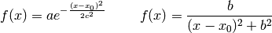
usando los valores a=2.0, 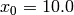, c=5,0 y b=0.5 en el intervalo x=[-50,+50].
Con la serie de Gregory-Leibniz para el cálculo
 usada anteriormente:
usada anteriormente: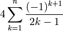
el valor obtenido de
se acerca lentamenta al verdadero con cada término. Calcular todos los valores que va tomando con cada término hasta llegar a un error absoluto de 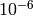 y representa en una gráfica ese valor frente número de elementos sumados, usando líneas contínuas, limitándonos a los 300 primeros elementos. El otro gráfico representar el valor de en los últimos 300 elementos. En gráficas dintintas, representar esta vez el valor abosuluto de la diferencia entre el valor calculado y el real frente al número de elementos, reprentando igualmente los 300 primeros en una gráfica y los 300 últimos en otra.El fichero medidas_I131.txt (tema 6 en el aula virtual) contiene medidas de masa de yodo 131 radioactivo hechas diariamente para medir su coeficiente de desintegración. La primera columna es la masa residual en gramos y la segunda es el error de la medida. Representar gráficamente los datos incluyendo barras de error usando puntos sin líneas, etiquetando los ejes.
Cuando una fuente de luz coherente atraviesa una rendija delgada, se produce difracción de la luz, cuyo patrón de intensidad en la aproximación de Fraunhofer está dado por:
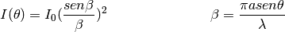
donde a es el ancho de la rendija,
 la longitud de onda de la luz, 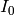 la intensidad en el eje y
la longitud de onda de la luz, 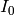 la intensidad en el eje y  el ángulo de la posición medida con el eje de la rendija (ver dibujo). Representar gráficamente la intensidad del patrón de difracción para 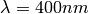, 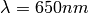 y 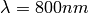 usando 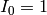 y a=0.04mm en el intervalo 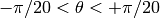. Comprobar cual es el efecto del patrón de difracción al duplicar el ancho de la rendija.
el ángulo de la posición medida con el eje de la rendija (ver dibujo). Representar gráficamente la intensidad del patrón de difracción para 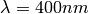, 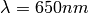 y 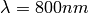 usando 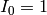 y a=0.04mm en el intervalo 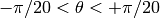. Comprobar cual es el efecto del patrón de difracción al duplicar el ancho de la rendija.
Como ya hemos visto, la variación de temperatura de un objeto a temperatura 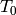 en un ambiente a 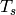 cambia de la siguiente manera:

con
 en horas y k un parámetro que depende del cuerpo. a) Representa gráficamente la variación de la temperatura con el tiempo, partiendo de una 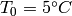 a lo largo de 24 horas suponiendo k=0.45 y temperatura ambiente de 40ºC. b) Superpon sobre esta curva las curvas correspondientes a cuerpos con k=0.3 y k=0.6 con distinto color y trazado identificándolas con una leyenda.
en horas y k un parámetro que depende del cuerpo. a) Representa gráficamente la variación de la temperatura con el tiempo, partiendo de una 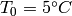 a lo largo de 24 horas suponiendo k=0.45 y temperatura ambiente de 40ºC. b) Superpon sobre esta curva las curvas correspondientes a cuerpos con k=0.3 y k=0.6 con distinto color y trazado identificándolas con una leyenda.Representa nuevamente la curva del apartado a) del ejercicio anterior superponiendo además las curvas correspondientes a temperaturas iniciales distintas, de 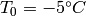 y 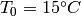. Para representa un una gráfica aparte cómo cambian las curvas con temperaturas ambiente de 20ºC y 50ºC, además de la de 40ºC. Identifica cada curva y etiqueta correctamente los ejes en todas las gráficas.
La curva plana llamada trocoide, una generalización de la cicloide, es la curva descrita por un punto P situado a una distancia b del centro de una circunferencia de radio a, a medida que rueda (sin deslizar) por una superficie horizontal. Tiene por coordenadas (x,y) las siguientes:
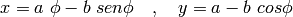
Escribir un programa que dibuje tres curvas (contínuas y sin símbolos), en el mismo gráfico cartesiano (OX,OY), para un intervalo 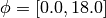 (en radianes) y para los valores de a=5.0 y b=2.0, 5.0 y 8.0 . Rotular apropiadamente los ejes e incluir una leyenda con los tres valores de que distinguen las tres curvas.
El movimiento de oscilador amortiguado se puede expresar la siguiente manera:
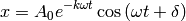
Siendo 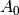 la amplitud inicial, 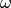 la fecuencia de oscilación y k el factor de amortiguamiento. Representar gráficamente el movimiento de un oscilador forzado de amplitud inicial de 10cm y frecuencia de 10 ciclos por segundo y 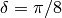 con factores de amortiguamiento de 0.1, 0.4, 0.9 y 1.1.
Para el gráfico correspondiente a k=0.1 dibujar con líneas a trazos los valores máximos y mínimos del movimiento oscilatorio. Nótese corresponden a las curvas para las que 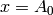 y 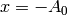.